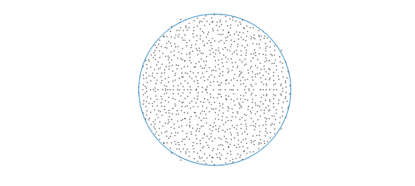
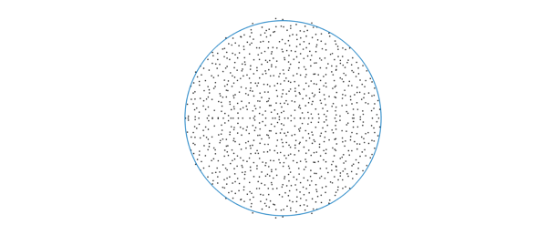
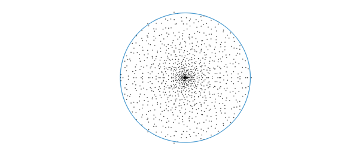
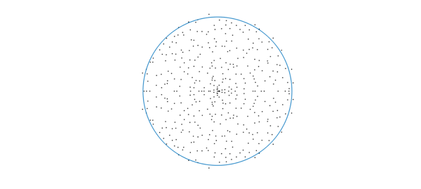
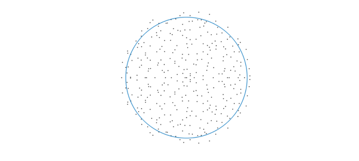

1. Eigenvalues of random matrices
As is well known [2,3], eigenvalues of large random matrices are distributed uniformly in a disk. This is called the circular law and it holds very generally (see [4]); the matrix elements are allowed to come from a variety of random variables, as long as they are independent (a property called universality). Here we verify the circular law with a standard Gaussian random matrix. Throughout this example, we scale the entries in the standard fashion so that the asymptotic spectral radius converges to 1.
n = 1000; A = randn(n)/sqrt(n); plot(eig(A),'k.'),hold on plot(chebfun(@(x)exp(1i*x),[0 2*pi])) axis equal off

2. Eigenvalues of random low-rank matrices
Low-rank matrices are everywhere these days. A natural question arises: what are the eigenvalues of random low-rank matrices? Specifically, consider matrices given by $AB^T$ where $A,B$ are tall skinny $m\times n$ random matrices. Of course there are $m-n$ eigenvalues at 0. Where are the other eigenvalues? An important fact here (which becomes crucial below) is that the nonzero eigenvalues are the same as those of $B^TA$, which is $n\times n$, hence smaller.
n = 1000; m = n*10; % aspect ratio 10 A = randn(m,n)/power(m*n,1/4); % scaled random rectangular matrix B = randn(m,n)/power(m*n,1/4); hold off plot(eig(B'*A),'k.'), hold on plot(chebfun(@(x)exp(1i*x),[0 2*pi])) axis equal off

The eigenvalues again appear to be distributed uniformly on the unit disk! A difficulty in explaining this is that here the elements aren't exactly independent. Most results in the literature on random matrices concern i.i.d. elements. Nonetheless, recent studies [1,5] explain the phenomenon: the eigenvalues of $AB^T$ are indeed distributed in the unit disk, as $m,n\rightarrow \infty$, but generally not uniformly. More precisely, denoting by $k=m/n$ the aspect ratio, the eigenvalue density at radius $r(0<r<1)$ converges as $n\rightarrow \infty$ almost surely to $g(r,k) = k/\sqrt{(1-k)^2+4kr^2}$. Note that as $k\rightarrow \infty$, $g(r,k)$ converges to the constant $1$, independent of $r$. This indicates that as we take the limit where the aspect ratio tends to infinity (while $m,n\rightarrow \infty$), the eigenvalue distribution converges to the uniform distribution over the unit disk.
Here is a qualitative explanation: As $m/n\rightarrow \infty$, the columns of the matrices $A,B$ become close to orthonormal, so there is an orthogonal $m\times m$ matrix $Q$ such that $QA\approx \big[I_n, 0\big]^T$ ($Q$ would also be random), and then the eigenvalues $AB^T$, which are the same as those of $(QB)^T(QA)$, are approximately those of the top $n\times n$ block of $QB$, which has elements that are i.i.d.
3. Eigenvalues of a product of two random matrices
The function $g(r,k)$ above suggests that for a product of two random square matrices, the eigenvalues should be markedly clustered near the origin. Let's illustrate this:
n = 1000; m = n; % we just changed this from n*10 in the low-rank case A = randn(m,n)/power(m*n,1/4); B = randn(m,n)/power(m*n,1/4); hold off plot(eig(B'*A),'k.'), hold on plot(chebfun(@(x)exp(1i*x),[0 2*pi])) axis equal off

One can play with the aspect ratio and see that the larger $m/n$ is, the more uniform the eigenvalue distribution becomes.
4. Eigenvalues of a Fredholm operator defined by a random, finite-rank bivariate function
Now we explore the continuous analogue. We construct a random bivariate function, generated by a new Chebfun command randnfun2: this generates a random bivariate function obtained by forming a function of random Fourier coefficients (with support in a disk), then restricting the domain to a smaller square. Let's generate such a function and look at the associated eigenvalues: here, we examine the eigenvalues of the Fredholm integral operator whose kernel is the bivariate function (this is a compact operator). Here, the eig(chebfun2) code computes the nonzero eigenvalues, using again (only more crucially) the identity $eig(AB) = eig(BA)$, as there are infinitely many eigenvalues at 0).
dt = 0.01; % max wavenumber 2pi/dt dom = [-1 1 -1 1]; f = randnfun2(dom,dt,'norm'); % normalized randum function ei = eig(f); disp(['Number of nonzero eigenvalues: ',num2str(length(ei))]) hold off, plot(ei,'k.'), hold on plot(chebfun(@(x)exp(1i*x),[0 2*pi])) axis equal off
Number of nonzero eigenvalues: 484

Again we see eigenvalues in a disk; are they uniformly distributed? By analogy with the finite-dimensional case, perhaps we expect the eigenvalues to be uniform, as we can regard $f(x,y)$ as $A(y)B(x)^T$ where $A,B$ are quasimatrices, i.e., matrices of size $\infty \times n$, that is, the aspect ratio is $m/n=\infty$. However, we think the distribution here is not quite uniform.
Experiments suggest that the uniformness depends on the support of the Fourier coefficients used for randnfun2. If we change it to bounded maximum degree, we obtain a more convincingly uniform distribution, aside from some clustering along the real axis: (below we extract the essence of randnfun and change the support of the coefficients from a disk (2-norm bound) to a square (max-norm bound); a 1-norm bound results in more clustered eigenvalues). It is an open problem to explain this observation!
n = round(2/dt);
c = randn(2*n+1) + 1i*randn(2*n+1); % random coefficients on a square
[x,y] = meshgrid(-n:n,-n:n);
if ( n>0 )
%c = c.*((x/n).^2 + (y/n).^2 <= 1); % 2-norm bound; default in randnfun
c = c.*(max(abs(x/n),abs(y/n)) <= 1); % max-norm bound
%c = c.*( (abs(x/n)+abs(y/n)) <= 1); % 1-norm bound: very clustered eigvals
end
c = c/sqrt(nnz(c)); % ensure var = 1 at each point
n = round(1.2*(dom(4)-dom(3))/dt+2);
dom2 = [ dom(1) dom(1)+n*dt dom(3) ... % bigger domain
dom(3)+n*dt ];
f = chebfun2(c, dom2, 'coeffs', 'trig');% periodic chebfun2
f = real(f);
f = f{-1,1,-1,1}/sqrt(dt); % restrict and normalize
ei = eig(f);
disp(['Number of nonzero eigenvalues: ',num2str(length(ei))])
hold off, plot(ei,'k.'), hold on
plot(chebfun(@(x)exp(1i*x),[0 2*pi]))
axis equal off
Number of nonzero eigenvalues: 401

5. References
-
Burda, Z. and Jarosz, A. and Livan, G. and Nowak, M. A. and Swiech, A., Eigenvalues and singular values of products of rectangular Gaussian random matrices, Physical Review E., 82(6),061-114,2010.
-
J. Ginibre, Statistical ensembles of complex, quaternion, and real matrices, J. Math. Phys.,6, 440, 1965.
-
M. L. Mehta, Random Matrices, Academic Press, 2004.
-
T. Tao, V. Vu, Random matrices: Universality of ESDs and the circular law, The Annals of Probability, 38(5), 2023--2065, 2010,
-
X. Zeng, Limiting empirical distribution for eigenvalues of products of random rectangular matrices, Statistics & Probability Letters, 126, 33--40, 2017.